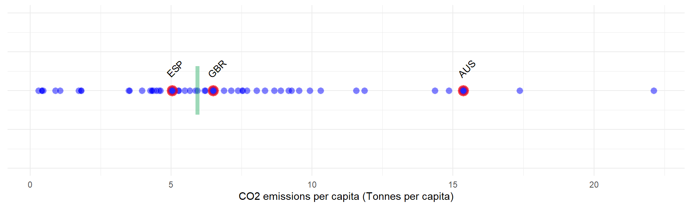
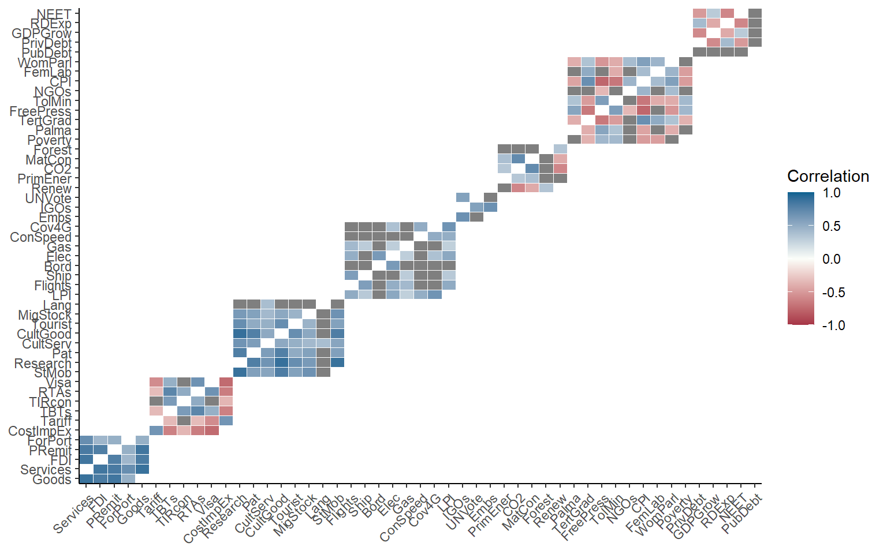

Chapter 5 Multivariate analysis
Correlations, and other relationships between indicators, can help to understand the structure of the data and to see whether indicators are redundant or are mistakenly encoded.
5.1 Correlations
Correlations are a measure of statistical dependence between one variable and another. Often, what is meant by “correlation”, is the Pearson correlation coefficient, which is a measure of linear dependence between two variables.
It’s worth spending a moment to consider what this the implication of the “linear” part actually means. Consider the following example:
# numbers in [-1, 1]
x1 <- seq(-1, 1, 0.1)
# x2 is a function of x1
x2 <- x1^2
# plot
library(ggplot2)
qplot(x1, x2)Now, clearly there is a very strong relationship between x1 and x2. In fact, x2 is completely dependent on x2 (there are no other variables or noise that control its values). So what happens if we check the correlation?
We end up with a correlation of zero. This is because although there is a very strong nonlinear relationship between \(x_1\) and \(x_2\), the linear relationship is zero. This is made even clearer when we fit a linear regression:
qplot(x1, x2) +
geom_smooth(method=lm, # Add linear regression line
se=FALSE) # Don't add shaded confidence region
## `geom_smooth()` using formula 'y ~ x'
Obviously, this is a very contrived example, and it is very unlikely you will see a relationship like this in real indicator data. However the point is that sometimes, linear measures of dependence don’t tell the whole story.
That said, relationships between indicators can often turn out to be fairly linear. Exceptions arise when indicators are highly skewed, for example. In these cases, a good alternative is to turn to rank correlation measures. Two well-known such measures are the Spearman rank correlation and the Kendall rank correlation. Rank correlations can handle nonlinearity as long as the relationship is monotonic. You could also argue that since the focus of composite indicators is often on ranks, rank correlation also makes sense on a conceptual level.
COINr offers a few ways to check correlations that are more convenient than stats::cor(). The first is to call the getStats() function that was already mentioned in Initial visualisation and analysis. This can be pointed at any data set and indicator subset and will give correlation between all indicators present. For example, taking the raw data of our example data set:
library(COINr)
library(magrittr)
ASEM <- build_ASEM()
statlist <- getStats(ASEM, dset = "Raw", out2 = "list")
# see a bit of correlation matrix
statlist$Correlations[1:5, 1:5]
## IndCode Goods Services FDI PRemit
## 1 Goods NA 0.8886729 0.8236043 0.8580885
## 2 Services 0.8886729 NA 0.8567035 0.8322828
## 3 FDI 0.8236043 0.8567035 NA 0.8009064
## 4 PRemit 0.8580885 0.8322828 0.8009064 NA
## 5 ForPort 0.4750653 0.6955028 0.4366541 0.4837038
# see a bit of correlations with denominators
statlist$DenomCorrelations[, 1:5]
## Denominator Goods Services FDI PRemit
## 1 Den_Area 0.2473558 0.2071061 0.3668625 0.2429470
## 2 Den_Energy 0.6276219 0.5916882 0.7405170 0.5312195
## 3 Den_GDP 0.8026770 0.7708846 0.8482453 0.7111943
## 4 Den_Pop 0.4158811 0.4577006 0.6529376 0.4379999The type of correlation can be changed by the cortype argument, which can be set to “pearson” or “kendall”.
The getStats() function also summarises some of this information in its output in the .$StatTable dataframe:
statlist$StatTable[ c("Indicator", "Collinearity", "Neg.Correls", "Denom.correlation")] %>%
head(10)
## # A tibble: 10 x 4
## Indicator Collinearity Neg.Correls Denom.correlation
## <chr> <chr> <dbl> <chr>
## 1 Goods Collinear 1 High
## 2 Services OK 1 High
## 3 FDI OK 1 High
## 4 PRemit OK 0 High
## 5 ForPort OK 6 OK
## 6 CostImpEx OK 16 OK
## 7 Tariff OK 15 OK
## 8 TBTs OK 7 OK
## 9 TIRcon OK 5 OK
## 10 RTAs OK 9 OKThis flags any indicators that have collinearity with any other indicators, or are significantly negatively correlated, or have correlations with denominators. These flags are activated based on thresholds that are inputs to the getStats() function (t_colin and t_denom).
Correlations can also be plotted using the plotCorr() function. This is a flexible plotting function, powered by ggplot2, which is adapted to the composite indicator context. It has a number of options because there are many ways to plot correlations in a composite indicator, including within an aggregation level, between levels, selecting certain groups, focusing on parents, and so on.
To see this, here are a few examples. First, let’s plot correlations between raw indicators.

Here, we have plotted raw indicators against indicators. A few things to note:
- By default, if a level is plotted against itself, it only plots correlations within the groups of the next aggregation level above. Use the
grouplevargument to control the grouping or disable. - Insignificant correlations (at 5% level) are excluded by default. Use the
pvalargument to change the significance threshold or to disable.
We can repeat the same plot with some variations. First, grouping by sub-index:
Second, we can plot the whole correlation matrix, and also include insignificant correlations:

It may often be more interesting to plot correlations between aggregation levels. Since there is a bit more space, we will also enable the values of the correlations using showvals = TRUE.

Note that again, by default the correlations are grouped with the parent level above. This is disabled by setting withparent = "none". To see correlations with multiple parents at once, we can set withparent = "family"

It is also possible to switch to a discrete colour map to highlight negative, weak and collinear values.
plotCorr(ASEM, dset = "Aggregated", aglevs = c(1,2), showvals = T, withparent = "family",
flagcolours = TRUE)
The thresholds for these colours can be controlled by the flagthresh argument. This type of plot helps to see at a glance where there might be a problematic indicator. In the example here, we see that TBTs are negatively correlated with all levels of the index.
Finally, it might be useful to simply have this information as a table rather than a plot. Setting out2 to “dflong” or “dfwide” outputs a data frame in long or wide format, instead of a figure. This can be helpful for presenting the information in a report or doing custom formatting.
plotCorr(ASEM, dset = "Aggregated", aglevs = c(2,3), showvals = T, withparent = "family",
flagcolours = TRUE, out2 = "dfwide")
## # A tibble: 8 x 3
## Indicator Agg2 Agg3
## <chr> <dbl> <dbl>
## 1 ConEcFin 0.53 0.42
## 2 Instit 0.86 0.81
## 3 P2P 0.86 0.78
## 4 Physical 0.87 0.83
## 5 Political 0.64 0.68
## 6 Environ 0.48 0
## 7 Social 0.74 0.9
## 8 SusEcFin 0 0Arguably it’s not so intuitive for a function called plotCorr() to output tables, but that’s how it is for now.